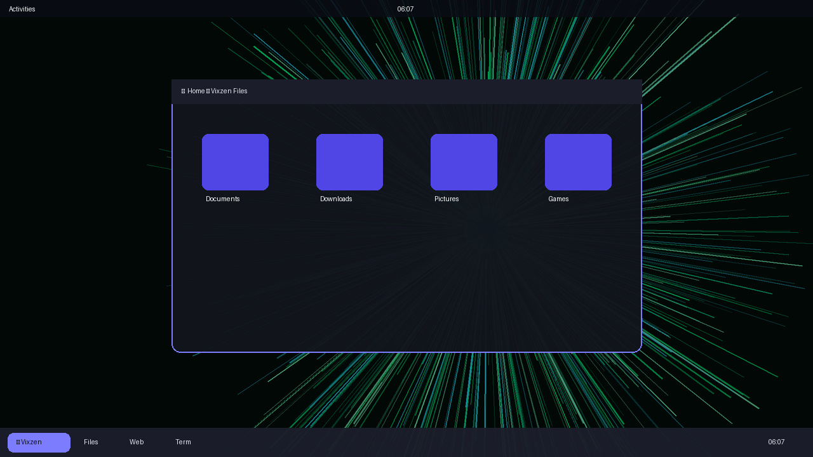
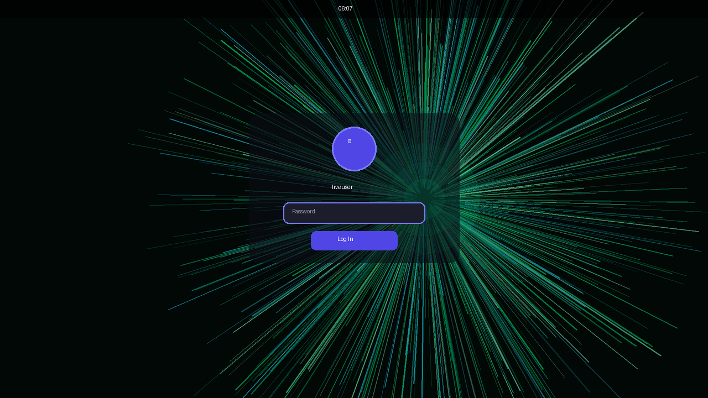

◈ Personal
Your daily driver. Full desktop, full control.
- Neon burst desktop + glowing dock
- Cinematic boot & login
- Vixzen Files, Settings, Power menu
- Insane animation mode (opt-in)
Lightweight • Graphical • Yours
A neon-minded desktop with a cinematic boot, a glowing taskbar dock, and a classroom-locked Edu edition — built live, in the open.
Your daily driver. Full desktop, full control.
Classroom-locked. Students learn, admins rule.

Desktop — burst wallpaper, centered dock, halo windows

Login — glass card, ringed avatar, glowing password field
Boot — comet spinner, Vixzen mark, indigo night
Preview builds for testers. Verify, write to USB, try without installing.
sha256: build on demand
sha256: build on demand
sha256sum VixzenOS-*.isosudo dd if=VixzenOS-*.iso of=/dev/sdX bs=4M status=progress oflag=syncISOs are built locally for now — press download to check for a local build.